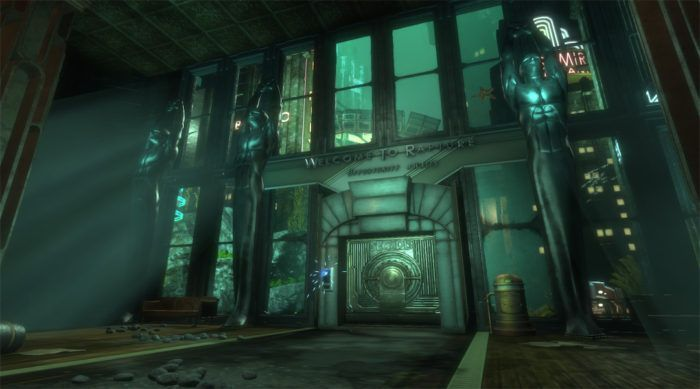

As seen in the launch trailer for BioShock: The Collection below, fans of the franchise will notice plenty of familiar scenes and gameplay moments, for it provides a montage of footage from the trilogy of games, beginning with the descent into Rapture, and touching on various points in each of the titles’ stories. Plus, as is the case with all of the BioShock releases, there’s plenty of fast-paced brawling with firearms and Plasmids, in addition to lots of wonderfully detailed imagery showing both Rapture and Columbia in chaos.
For those unaware, BioShock: The Collection will give veterans of the franchise and newbies alike completely upgraded visuals for the games, as the release’s titles are set to run at 1080p and up to 60 FPS. Of course, should gamers want an even better idea of how BioShock: The Collection has revamped the originals, 2K has shared plenty of videos in the past that offer a look at the enhanced displays. For instance, fans can also check out this graphics comparison trailer to see side-by-sides of the first versions of the BioShock games next to their updated counterparts.
Furthermore, if some fans don’t consider BioShock: The Collection‘s trailers as having enough information, several weeks ago, 2K also published nearly 35 minutes of gameplay footage from each of the titles. Rather than fans taking in an edited cut of a trailer, these particular videos actually offer a look at how the refined graphics will hold up during gameplay.
Naturally, once gamers on all platforms are able to experience BioShock: The Collection, one can only hope for all of the fans on PC, PlayStation 4, and Xbox One to have a smooth, bug-free experience. After all, should the remastered anthology’s release go on to be financially successful, it’s a safe bet to make that 2K will finally begin work on a new game in the series.